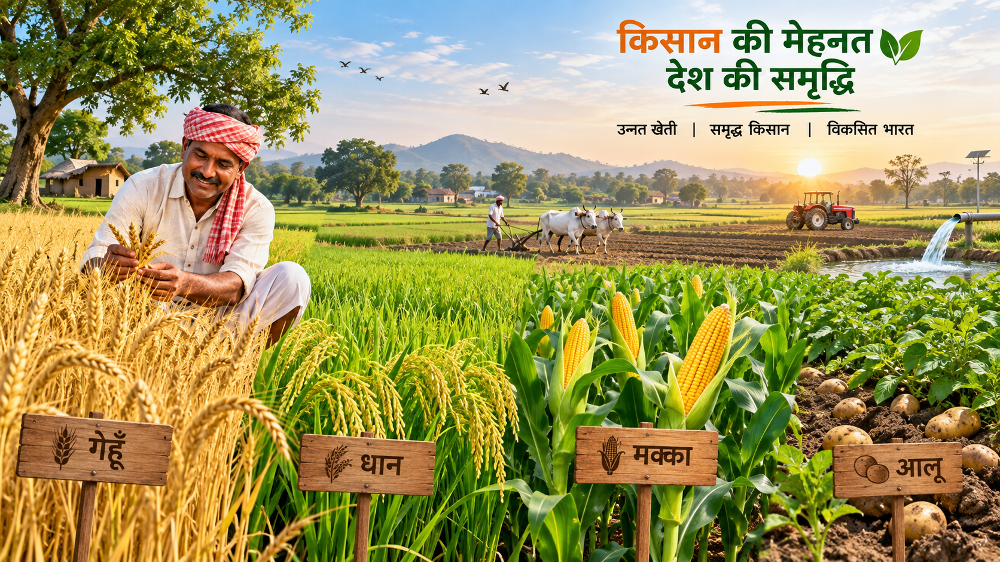

AnajTrack helps farmers understand and manage the grain procurement process digitally. Follow these steps to register, select your crop, receive a token and visit the procurement centre at your scheduled time.
Open the farmer registration page and enter the required personal and location details. Make sure the information entered is correct.
Select the crop you want to bring for procurement and enter the approximate quantity in quintals.
Select the appropriate procurement centre based on your location and the available procurement arrangements.
After the required details are submitted, the system can provide a token or scheduled slot for procurement.
Check your token details carefully and visit the selected procurement centre according to the assigned date and time.
Show your required details and token at the procurement centre. Centre staff can verify the farmer and token information.
After verification, the crop can be received according to the applicable procurement process, quality requirements and approved rates.
Procurement information can be recorded digitally so that the farmer and authorized officials can maintain the relevant transaction records.
Keep the required identity information ready when completing registration.
Use an active mobile number for important communication related to your registration.
Keep your crop type and approximate quantity information ready.
If you have any question regarding registration, procurement centres or the AnajTrack process, visit our contact page for assistance.
Contact Us